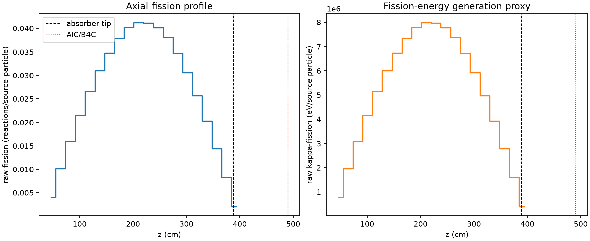
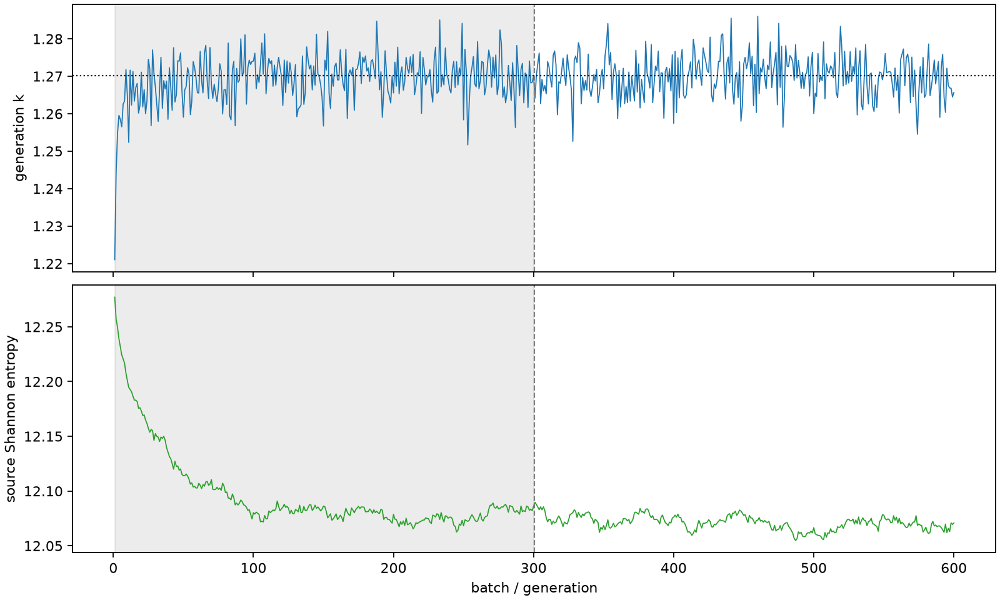

| field | value |
|---|---|
| experiment | V2-STAGE_256_OGRENCI_04-0005 |
| k | 1.2701897685712344 |
| MC standard error | 0.00018538853681477442 |
| seconds | 6031.830187918 |
| acceptance | not_assessed |
| convergence | review_required |
Completed is output integrity only; physical and statistical review required. Zero tallies do not prove zero production or zero uncertainty.
| diagnostic | value |
|---|---|
| geometric fuel voxels | 5280 |
| zero fission tally voxels | 0 |
| low signal fuel voxels | 0 |
| low signal fission share | 0.0 |
| low signal kappa share | 0.0 |
| important fission share | 0.9500914730896325 |
| previous filter included | 5280 |
| duration estimate s | 1562.5173488400023 |
| actual minus estimate s | 4469.3128390779975 |
| fission relative MC error | statistics |
|---|---|
| all_geometric_fuel | {"voxels": 5280, "positive_mean_voxels": 5280, "zero_mean_voxels": 0, "undefined_relative_error_voxels": 0, "median": 0.010131225049517228, "p95": 0.03155281340718414, "maximum": 0.04216542868809929} |
| low_signal | {"voxels": 0, "positive_mean_voxels": 0, "zero_mean_voxels": 0, "undefined_relative_error_voxels": 0, "median": null, "p95": null, "maximum": null} |
| important_95pct | {"voxels": 4197, "positive_mean_voxels": 4197, "zero_mean_voxels": 0, "undefined_relative_error_voxels": 0, "median": 0.00938304776526897, "p95": 0.013810350017348151, "maximum": 0.01703956571600357} |
| outside_previous_filter | {"voxels": 0, "positive_mean_voxels": 0, "zero_mean_voxels": 0, "undefined_relative_error_voxels": 0, "median": null, "p95": null, "maximum": null} |
| kappa_fission relative MC error | statistics |
|---|---|
| all_geometric_fuel | {"voxels": 5280, "positive_mean_voxels": 5280, "zero_mean_voxels": 0, "undefined_relative_error_voxels": 0, "median": 0.010120427865683849, "p95": 0.03151939581472471, "maximum": 0.04212013264633982} |
| low_signal | {"voxels": 0, "positive_mean_voxels": 0, "zero_mean_voxels": 0, "undefined_relative_error_voxels": 0, "median": null, "p95": null, "maximum": null} |
| important_95pct | {"voxels": 4197, "positive_mean_voxels": 4197, "zero_mean_voxels": 0, "undefined_relative_error_voxels": 0, "median": 0.009373327869633777, "p95": 0.013795321874096234, "maximum": 0.017020265487022943} |
| outside_previous_filter | {"voxels": 0, "positive_mean_voxels": 0, "zero_mean_voxels": 0, "undefined_relative_error_voxels": 0, "median": null, "p95": null, "maximum": null} |
| axial bin | fission share | kappa-fission share |
|---|---|---|
| 1 | 0.00768448045506827 | 0.007684828683335978 |
| 2 | 0.019552203362596107 | 0.019552194207540598 |
| 3 | 0.030777382727176037 | 0.03077740066545175 |
| 4 | 0.0413374208134374 | 0.04133750388131977 |
| 5 | 0.05122885671735169 | 0.051228688175630935 |
| 6 | 0.059842345595096456 | 0.05984218850653614 |
| 7 | 0.06713432590005813 | 0.06713429355154517 |
| 8 | 0.07304411215435665 | 0.07304394726208044 |
| 9 | 0.0775506505337517 | 0.07755043258932136 |
| 10 | 0.07938798568098471 | 0.07938791345473849 |
| 11 | 0.07928562034187137 | 0.07928565201053858 |
| 12 | 0.0773854534435886 | 0.07738556328956403 |
| 13 | 0.0733675349095064 | 0.07336740948533524 |
| 14 | 0.06699138355586862 | 0.06699112574442373 |
| 15 | 0.058975253751056715 | 0.05897518750016442 |
| 16 | 0.049548359744563716 | 0.049548341301550704 |
| 17 | 0.03912297214757047 | 0.03912285831798759 |
| 18 | 0.02777220010920477 | 0.02777222235457765 |
| 19 | 0.015990439267822 | 0.015990389283721148 |
| 20 | 0.004021018789070123 | 0.004021859734636582 |
Histories include the inactive-to-active transition at batch 300. kappa-fission approximates fission energy production, not total heat deposition.

